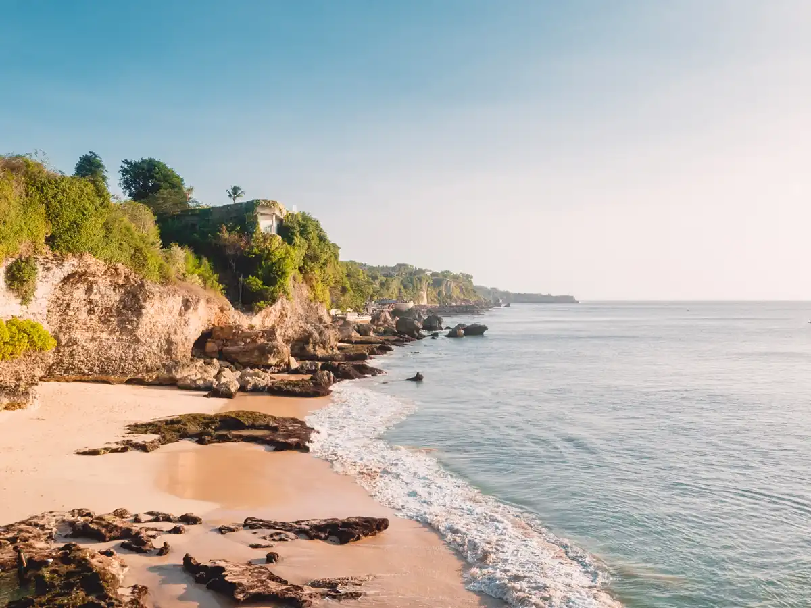
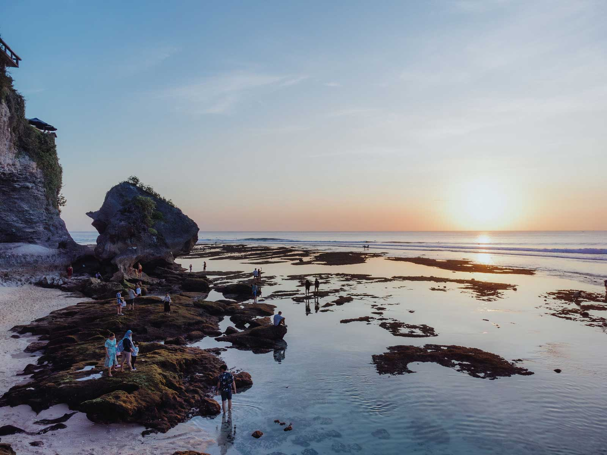
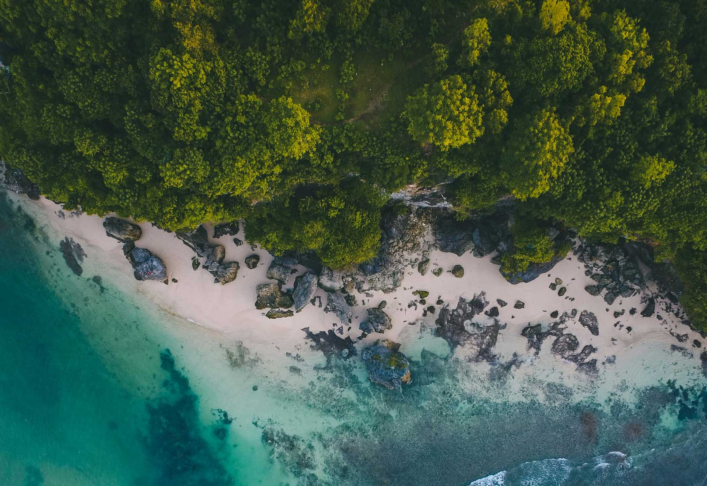
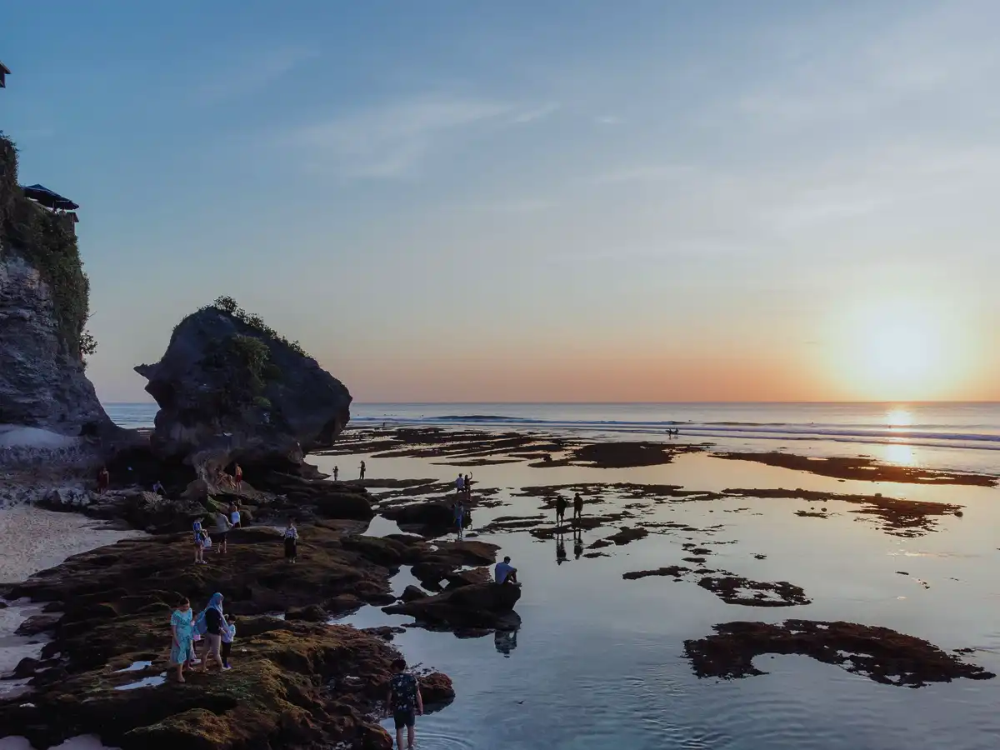

A slow day around the Bukit's quieter coast - cliff coves, natural rock pools, and surf beaches most tours skip. Fewer crowds, more stairs, and a coconut to carry down to the sand.

A small cove tucked below the cliffs near Jimbaran. At low tide, shallow rock pools form in the volcanic rock - the "natural jacuzzi" people come for. Reached by a steep path down, so it stays quiet. Best in the morning before the tide fills in, or late for the sunset.

At the bottom of a long clifftop staircase - a few hundred steps down and back up. The reward is a wide, empty stretch of sand, sea caves, and a reef that draws surfers at the right tide. It is one of the least-visited beaches on the peninsula, mostly because of those steps.

A long beach under limestone cliffs, lined with simple warungs where you can sit with a cold drink and watch the surf. The easiest of the four to get to, with a famous left-hand break offshore. A good spot to eat lunch and slow down for an hour.

Reached on foot down a maze of steps past cliffside guesthouses and cafes. The sand shrinks and grows with the tide, so it is best at low water - that is also when the reef break turns on for surfers. Small, scenic, and a laid-back place to end the day with the sunset.
Per car - one price covers up to 5 people, so a fuller car costs less per head. Groups of 6 or more simply take a second car. Only the Exclusive version adds a per-person part: the entrance and parking fees.
Your choice, via the Standard / Exclusive toggle above. These beaches are mostly free - you only pay small parking or local access fees at each one. Standard leaves those to you; Exclusive prepays them so the day is sorted.
Pick your date, tap Book, and confirm on WhatsApp. A 10% deposit secures your car and driver; the balance is paid in cash or by transfer at the end of the tour. Guests staying at our villas skip the deposit entirely.
Some are. Green Bowl and Tegal Wangi have long, steep staircases down the cliff, and Bingin is a scramble past clifftop guesthouses. Balangan is the easiest. Wear grippy shoes, and tell us if steep steps are a problem - we can swap in the flatter stops.
Swimwear, a towel, reef-safe sunscreen, and sandals you can walk down steps in. There are a few warungs at Balangan and Bingin, but bring cash and water. We send you off with a fresh coconut for the beach.
Of course - staying on in Uluwatu, Bingin or Jimbaran after the tour is no problem. Just tell us when you book.